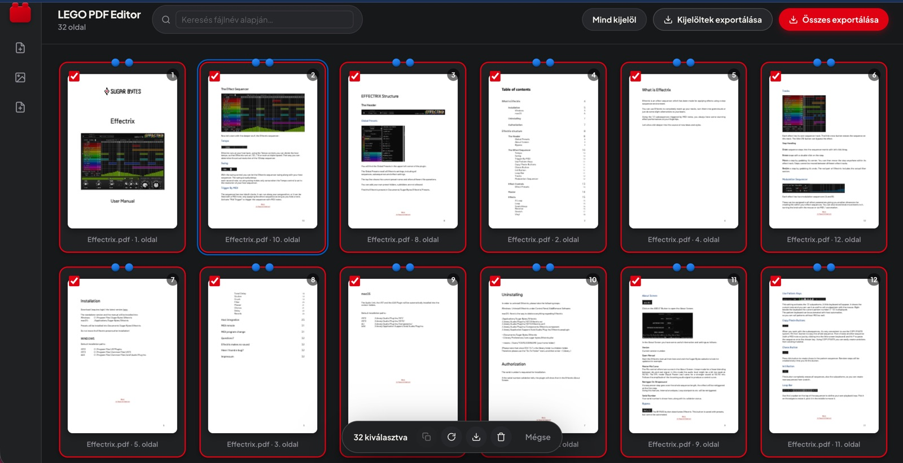
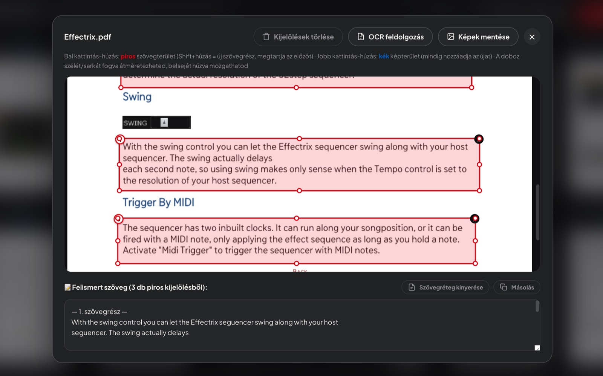
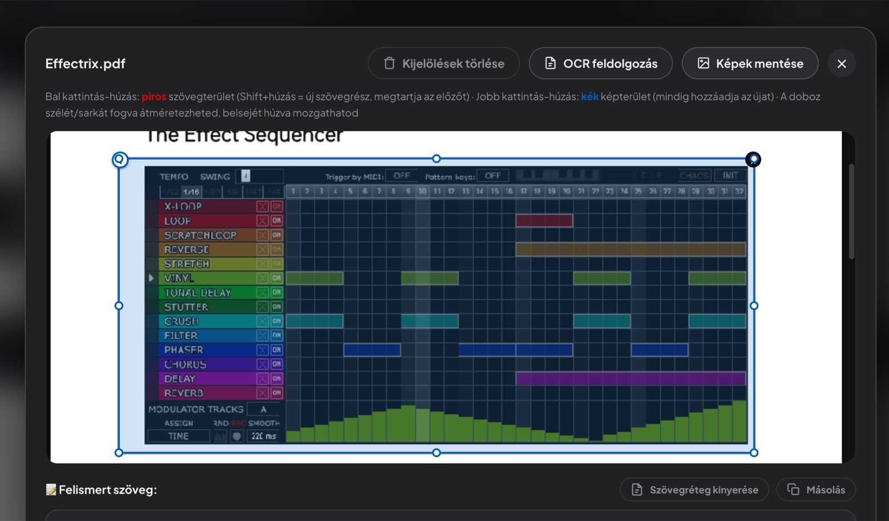
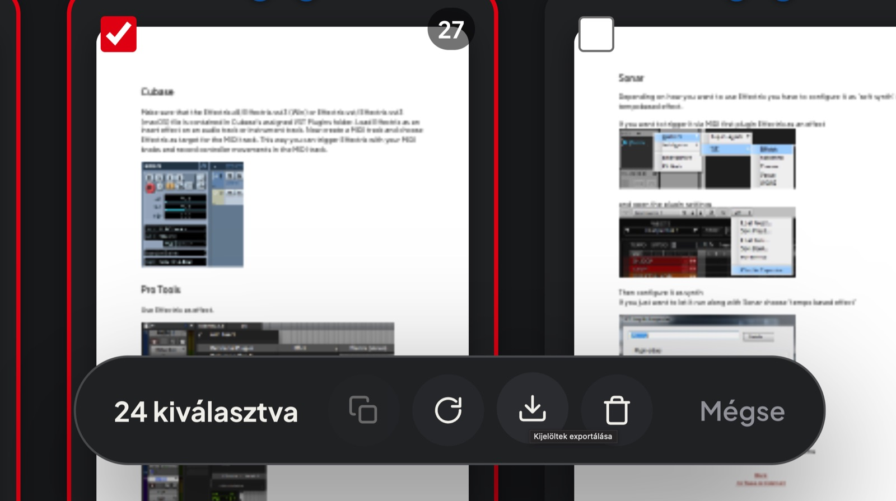
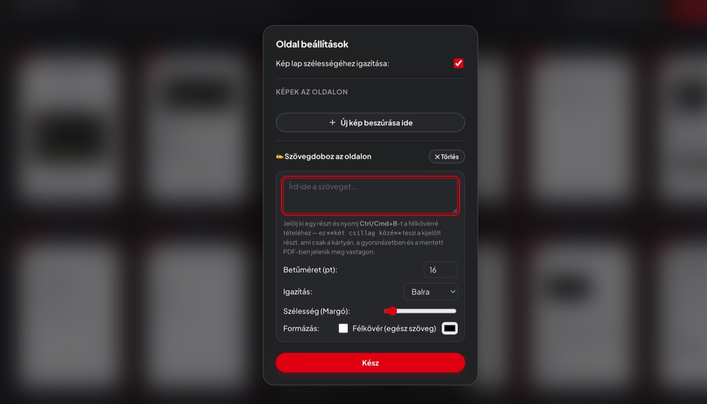

Építs új PDF-et kockánként, meglévő oldalakból.
Tölts fel tetszőleges számú PDF-et, rendezd át az oldalakat húzással, forgasd, duplikáld vagy töröld őket – és exportáld egyetlen új dokumentumba.
Ingyenes · Nincs telepítés · A fájljaid nem hagyják el a gépedet

Minden, ami egy PDF összerakásához kell
Az egész alkalmazás a böngésződben fut, így a dokumentumaid sehova nem töltődnek fel.
Több PDF egyszerre
Tölts fel bármennyi PDF-et, az alkalmazás automatikusan oldalakra bontja őket. Képet és üres lapot is beszúrhatsz.
Húzd és rendezd
Kártyás nézet drag and drop-pal: az oldalak sorrendje pillanatok alatt átrendezhető.
Forgatás, duplikálás, törlés
Egyenként vagy csoportosan, visszavonási lehetőséggel.
QuickLook
Szóköz lenyomásával nagy felbontásban ellenőrizheted a kijelölt oldalakat.
Szöveg és kép kivágása
Jelölj ki szövegdobozokat és képrészleteket, az OCR magyarul is felismeri a szöveget, a képeket ZIP-ben mentheted.
Egykattintásos export
Az összes vagy csak a kijelölt oldalakat mentheted egyetlen új PDF-be.
Így néz ki
Néhány pillanatkép az alkalmazásból.




Billentyűparancsok
Gyorsabban megy, ha nem kell egérhez nyúlni.